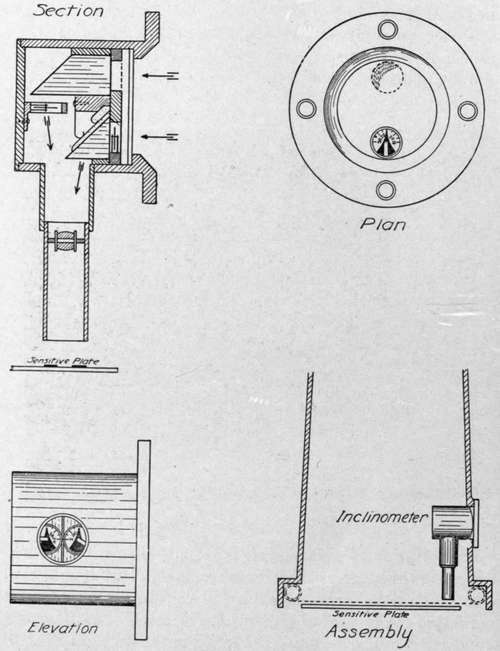
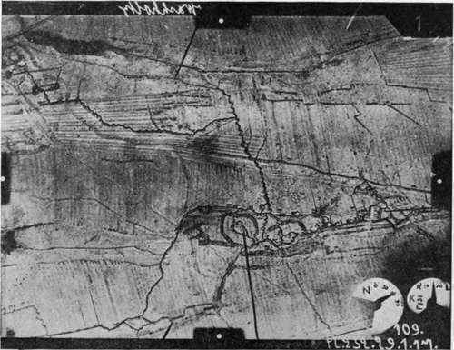

Devices For Recording Data On Plates
Description
This section is from the book "Airplane Photography", by Herbert E. Ives. Also available from Amazon: Airplane photography.
Devices For Recording Data On Plates
Numbering Devices
The number of the camera is impressed on negatives taken with the American L camera through the agency of a small transparent corner of celluloid. It would be entirely possible to incorporate a rotating disc which should turn by the operation of plate changing and carry a series of numbers, so that each exposure could be numbered serially. Numbering of individual plates is more commonly done by holes, notches, or even numerals, in the turned over portion of the sheaths, which are then recorded photographically when a picture is taken (Fig. 75). The chief objection to this method is the difficulty of keeping the sheaths together in sets, especially as individual ones become damaged or lost. In practice there is also danger of the sheaths being carelessly loaded in wrong order.
The more ambitious idea of recording on the plate all the information given by the instrument board of the plane occurs independently and spontaneously to all aerial photographic map makers. These ideas vary from attempts to photograph the actual instrument board on every plate—:a difficult task indeed with the instruments and camera placed as they are in the ordinary plane—to the incorporation of compass, altimeter, and inclinometer in the camera itself.
Figure 58 shows the plan adopted in the English F type film mapping camera already described, for photographing a compass and an altimeter on the film. Here the combined compass and altimeter dial is above the camera, and is mounted in a cell with a glass bottom. Below it is a lens focussing the needles and compass points on the plane of the. film. The light for photography is furnished by a diffusely reflecting white surface on top of the camera, illuminated by the sky. (The camera was carried outboard.) In Fig. 56 is shown a picture with the compass image impressed upon it.
Figure 74 shows a type of inclination indicator found in some captured German cameras. It consists essentially of two small pendulums or plumb-bobs; one to indicate lateral, the other longitudinal inclination, arranged to be photographed in silhouette on the plate, as shown in the lower part of the diagram and in the print from a captured negative (Fig. 75).
Fig. 74. - Diagram of inclinometer used in some German cameras.
Fig. 75. - Photograph made with German camera, showing inclinometer record, four points for locating diameters and center of plate, and (upper right-hand corner) number of the plate sheath.
Both these devices suffer from the deficiencies of the instruments they photograph. The compass and the inclinometer, as already mentioned in the discussion of airplane instruments, only behave normally in straight-away flying, failing to indicate correctly when the plane is subject to accelerations in any direction. In general all attempts to record directional data in the camera are of little promise, unless either the instruments or the camera are automatically held level by some gyroscopic device. If the instruments are so controlled, rather elaborate means for photographing them are necessary. If the camera is stabilized, the inclinometers are unnecessary, and the compass behaves rationally.
Another scheme for indicating inclinations, which is not subject to the above objections, is to photograph the horizon either on a separate film or on the same sensitive surface, simultaneously with the principal exposure. The difficulty here is the practical one that it is only feasible in localities of great atmospheric clearness. Ordinarily, especially anywhere near the sea-coast, the horizon is too rarely seen to be a reliable mark (Fig. 4). It is possible, however, that this objection could be overcome by the use of specially red sensitive plates and suitable color filters, as discussed in the chapter on "Filters." The method would in any case be useless in mountainous country.
The difficulties discussed with reference to direction indicating instruments of course do not hold with the altimeter. Ordinarily, though, the altitude changes slowly enough to permit of sufficiently accurate records being made by pencil and pad. For high precision map making a photographic record of altimeter readings has a legitimate claim. As we have seen, a small altimeter is incorporated in the English F camera, but the bulk which a really precision altimeter would assume would be a bar to its use in this way. A time or serial number record on the plate or film, synchronized with a similar record on the film of an auxiliary camera which photographs the altimeter and other instruments, may be the simplest way to preserve the majority of the desired data.
Devices For Heating The Camera
Parts of the camera mechanism which depend on the uniformity of action of springs or upon adequate lubrication are susceptible to change with variation of temperature. At high altitudes low temperatures are met which may freeze ordinary machine oils or may cause springs to seriously alter their tension, even to break. To meet this difficulty, and probably also to dispel the occasional condensation of moisture on the optical parts, the German cameras are equipped with an electrical heating coil placed just below the shutter, and arranged to connect with the general heating and lighting current of the plane. Two contacts are ordinarily provided, for offsetting the effects of temperatures of —15 and —30 degrees centigrade. An additional function of this heating coil is perhaps to maintain the sensitiveness of the plates or film.
Continue to:
- prev: Sights Attached To The Plane
- Table of Contents
- next: III. The Suspension And Installation Of Airplane Cameras. Chapter XIV. Theory And Experimental Study Of Methods Of Camera Suspension. General Theory
Tags
camera, lens, airplane, aerial, film, exposure, photography, maps, birdseye